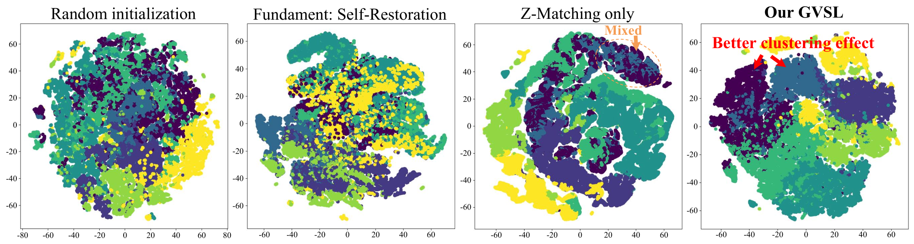
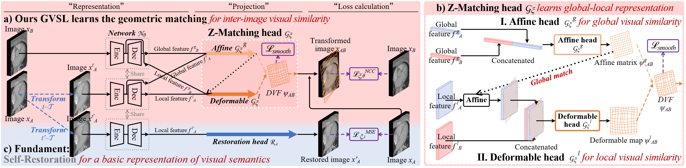

GVSL in 3D Medical Image Self-supervised Pre-training
[Accepted by CVPR 2023]
- Yuting He 1
- Guanyu Yang 1
- Rongjun Ge 2
- Yang Chen 1
- Jean-Louis Coatrieux 3
- Boyu Wang 4
- Shuo Li 5
- 1Southeast University
- 2Nanjing University of Aeronautics and Astronautics
- 3University of Rennes 1
- 4Western University
- 5Case Western Reserve University


Overview
Learning inter-image similarity is crucial for 3D medical images self-supervised pre-training, due to their sharing of numerous same semantic regions. However, the lack of the semantic prior in metrics and the semantic-independent variation in 3D medical images make it challenging to get a reliable measurement for the inter-image similarity, hindering the learning of consistent representation for the same semantics. We investigate the challenging problem of this task, i.e., learning a consistent representation between images for a clustering effect of the same semantic features. We propose a novel visual similarity learning paradigm, Geometric Visual Similarity Learning, which embeds the prior of topological invariance into the measurement of the inter-image similarity for consistent representation of semantic regions.
Video
(Waiting...)
Highlights
- Advance the learning of inter-image similarity in 3D medical image self-supervised pre-training and push the representability of same visual semantics between images.
- A powerful and novel pretext learning paradigm, Geometric Visual Similarity Learning, is proposed to embeds the prior of topological invariance into the measurement for reliable learning.
- A reliable and novel projection head, Z-Matching head, is proposed for simultaneously powerful global and local representation in learning geometric matching-based pre-training.
- Experiments demonstrates our learning of inter-image similarity yields more powerful inner-scene, inter-scene, and global-local transferring ability on four challenging 3D medical image tasks.
Why learning inter-image similarity is crucial for 3D medical image SSP?

Challenge
Motivation
The framework of our GVSL

Intuitions on GVSL’s behavior
BibTeX
If you find our project or pre-trained parameters useful in your research, please cite:
@InProceedings{He_2023_CVPR,
author = {Yuting He, Guanyu Yang, Rongjun Ge, Yang Chen, Jean-Louis Coatrieux, Boyu Wang, Shuo Li},
title = {Geometric Visual Similarity Learning in 3D Medical Image Self-supervised Pre-training},
booktitle = {Proceedings of the IEEE/CVF Conference on Computer Vision and Pattern Recognition (CVPR)},
month = {June},
year = {2023},
pages = {}
}